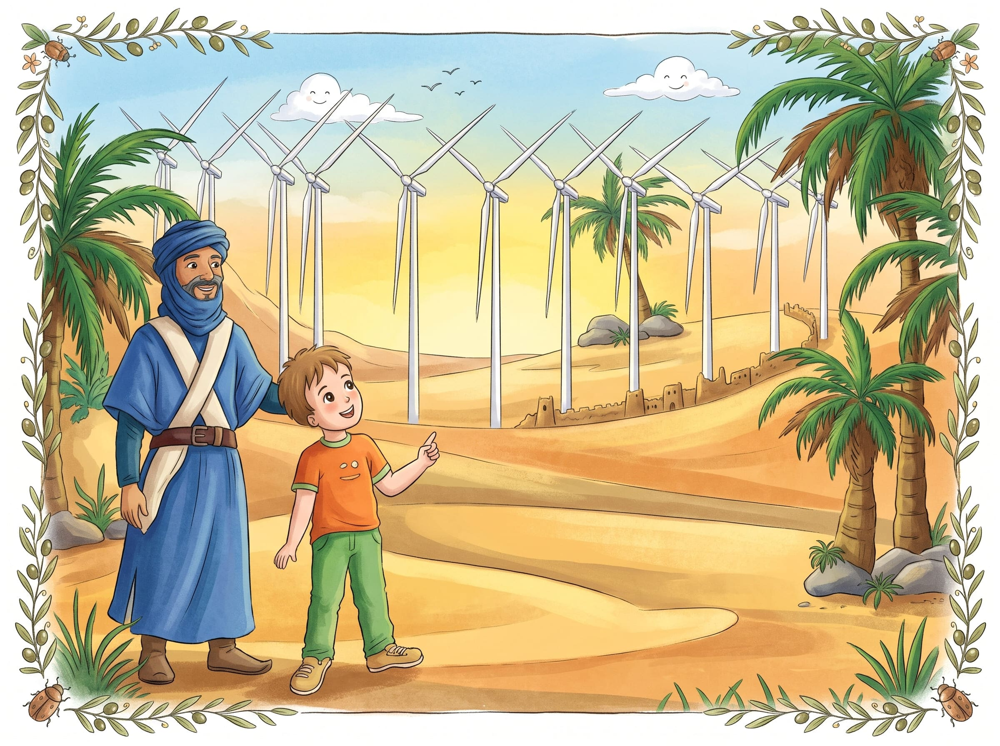
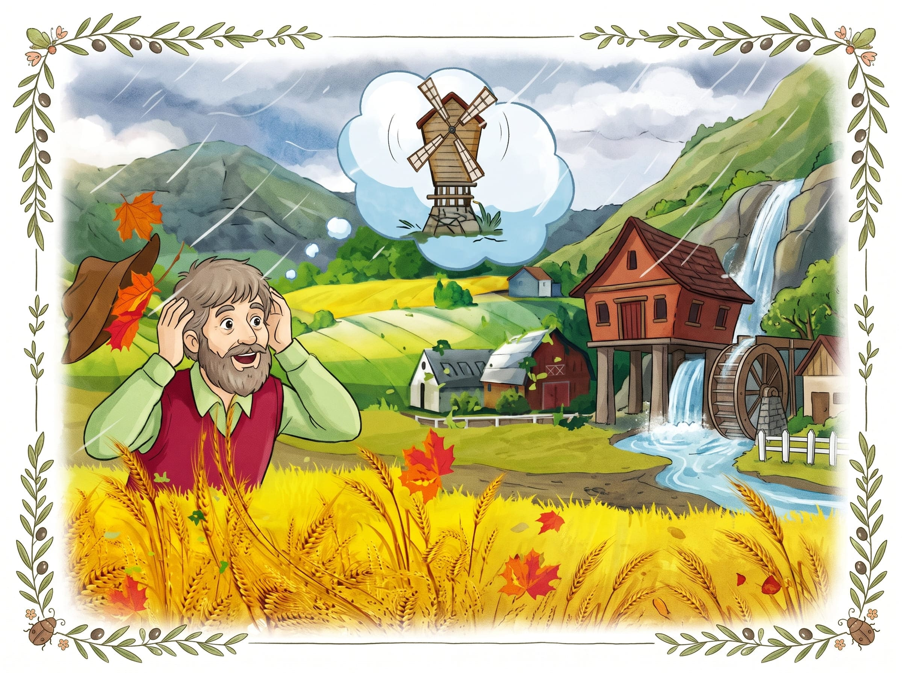
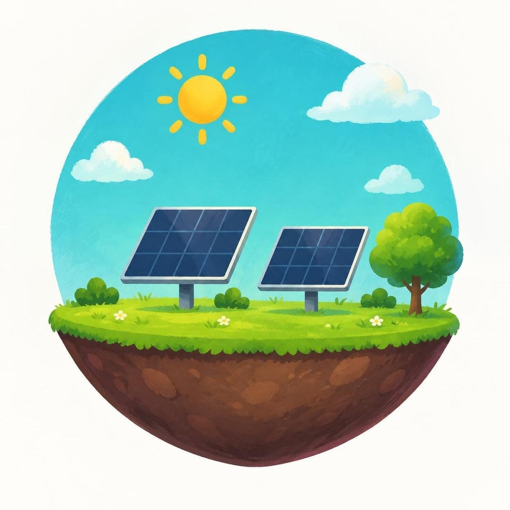

🔊 اسْتَمِعْ جَيِّدًا إِلَى النَّصِّ الْمَنْطُوقِ ثُمَّ أَجِبْ عَنِ الْأَسْئِلَةِ التَّالِيَةِ:

1. أَيَّ مَدِينَةٍ زَارَتِ الْعَائِلَةُ وَمَتَى كَانَ ذَلِكَ؟
2. اخْتَرِ الْإِجَابَةَ الصَّحِيحَةَ / هَلِ الْمِنْطَقَةُ الَّتِي تَجَوَّلُوا فِيهَا هِيَ:
3. فِي النَّصِّ شَيْءٌ أَدْهَشَ عِصَامًا، مَا هُوَ؟
4. مُنْذُ مَتَى بَدَأَتْ تَعْمَلُ هَذِهِ الْمَحَطَّةُ؟ وَمَا هِيَ مَزَايَا الطَّاقَةِ الْهَوَائِيَّةِ؟
5. ضَعْ صَحِيح، أَوْ خَطَأ: تَمَّ اخْتِيَارُ مَدِينَةِ أَدْرَارَ لِتَكُونَ أَوَّلَ حَقْلٍ لِتَوْلِيدِ الطَّاقَةِ الْهَوَائِيَّةِ لِأَنَّ:
• مِنْطَقَةُ أَدْرَارَ تَمْتَازُ بِكَثْرَةِ الْأَمْطَارِ:
• مِنْطَقَةُ أَدْرَارَ تَمْتَازُ بِكَثْرَةِ هُبُوبِ الرِّيَاحِ:
• مِنْطَقَةُ أَدْرَارَ مُحَاطَةٌ بِالْبَحْرِ مِنْ كُلِّ مَكَانٍ:
6. مَاذَا تُنْتِجُ الْمُوَلِّدَاتُ الْكَهْرَبَائِيَّةُ؟
7. اذْكُرْ إِذَا مَا كَانَتِ الْأَعْمَالُ التَّالِيَةُ مُفَاجَأَةً أَمْ لَا:
• تَسَاقُطُ الْمَطَرِ صَيْفًا فِي الصَّحْرَاءِ:
• هُبُوبُ عَاصِفَةٍ رَمْلِيَّةٍ بِالصَّحْرَاءِ:
• نَجَاحُ الْمُجْتَهِدِ:
• ظُهُورُ صَحْنٍ فَضَائِيٍّ:
صَحِيحَةٌ: 0 | خَاطِئَةٌ: 0
• فِي الْأُسْبُوعِ الثَّانِي مِنْ عُطْلَةِ الشِّتَاءِ زُرْتُ وَعَائِلَتِي خَالِي السَّاكِنَ بِأَدْرَارَ.
• أَقُولُ جُمَلًا عَلَى الْمِنْوَالِ التَّالِي مُوَظِّفًا (سَاعَة، الْيَوْم، الْأُسْبُوع، الشَّهْر، السَّنَة): «بَدَأَتْ مَحَطَّةُ تَوْلِيدِ الطَّاقَةِ الْهَوَائِيَّةِ فِي إِنْتَاجِ الْكَهْرَبَاءِ مُنْذُ ثَلَاثِ سَنَوَاتٍ.»
أَكْمِلْ هَذِهِ الْجُمَلَ بِمَا يُنَاسِبُ: (الْأُسْبُوعِ، الْيَوْمِ، سَاعَةً، شَهْرًا، السَّنَةِ)
• فِي
لَيْلٌ وَنَهَارٌ وَعَدَدُ سَاعَاتِهِ أَرْبَعٌ وَعِشْرُونَ
.
• فِي
سَبْعَةُ أَيَّامٍ.
• فِي
اثْنَا عَشَرَ
.
🎙️ أُنْتِجُ شَفَهِيًّا:
شَاهَدْتَ حِصَّةً فِي التِّلْفَازِ تَتَحَدَّثُ عَنْ كَثْرَةِ الْحَاجَةِ إِلَى اسْتِعْمَالِ الطَّاقَةِ الْكَهْرَبَائِيَّةِ مِمَّا أَدَّى إِلَى نَفَاذِ مَصَادِرِ الطَّاقَةِ وَتَلَوُّثِ الْجَوِّ وَضَرُورَةِ اسْتِبْدَالِ هَذِهِ الْمَصَادِرِ الْمُلَوَّثَةِ بِأُخْرَى.
- فِيمَ نَسْتَعْمِلُ الطَّاقَةَ الْكَهْرَبَائِيَّةَ؟
- كَيْفَ تُبَذَّرُ الطَّاقَةُ الْكَهْرَبَائِيَّةُ؟
- مَاذَا نَفْعَلُ لِلْمُحَافَظَةِ عَلَيْهَا؟
- مَا هِيَ الْمَصَادِرُ الْأُخْرَى الَّتِي نَسْتَمِدُّ مِنْهَا الطَّاقَةَ؟
🧩 رَتِّبِ الْجُمَلَ الْمُبَعْثَرَةَ التَّالِيَةَ (بِالنَّقْرِ عَلَيْهَا بِالتَّسَلْسُلِ) لِلْحُصُولِ عَلَى فَقْرَةٍ مُنَاسِبَةٍ:
صَحِيحَةٌ: 0 | خَاطِئَةٌ: 0

بَنَى سِي لُونِيسُ دَارًا بَعِيدًا عَنْ ضَوْضَاءِ الْمُدُنِ، وَاخْتَارَ لَهَا مَوْقِعًا مُتَمَيِّزًا عَلَى سَفْحِ الْجَبَلِ، وَتَفَرَّدَ بِهَنْدَسَةٍ خَاصَّةٍ، فَهِيَ تَرْتَكِزُ عَلَى أَعْمِدَةٍ بَارِزَةٍ وَمُرْتَفِعَةٍ، سَمِيكَةٍ وَشَدِيدَةِ الصَّلَابَةِ يَمُرُّ تَحْتَهَا شَلَّالٌ مُتَدَفِّقٌ مِنْ أَعْلَى الْجَبَلِ يُسْمَعُ خَرِيرُهُ مِنْ بَعِيدٍ.
عَزَمَ سِي لُونِيسُ عَلَى بِنَاءِ طَاحُونَةٍ بِجَانِبِ الدَّارِ تُحَرِّكُهَا الْمِيَاهُ الْمُنْحَدِرَةُ بِقُوَّةٍ. وَذَاكَ مَا فَعَلَ. وَصَارَتِ الطَّاحُونَةُ وِجْهَةَ كُلِّ الْمُزَارِعِينَ حَيْثُ يَغْدُونَ إِلَيْهَا حَامِلِينَ الْحُبُوبَ لِتَحْوِيلِهَا إِلَى دَقِيقٍ نَاعِمٍ، وَاعْتَادَ سِي لُونِيسُ أَنْ يُقَايِضَ عَمَلَهُ بِنَصِيبٍ مُحَدَّدٍ مِنْ كُلِّ كِيسٍ يَطْحَنُهُ.
لَكِنْ، وَمَعَ كَثْرَةِ الطَّلَبِ عَلَيْهِ خَاصَّةً فِي فَصْلِ الصَّيْفِ، وَقِلَّةِ كَمِّيَّةِ وَسُرْعَةِ تَدَفُّقِ الْمِيَاهِ الَّتِي تُدِيرُ الطَّاحُونَةَ، صَارَ سِي لُونِيسُ مُقَصِّرًا فِي تَقْدِيمِ خَدَمَاتِهِ لِلْقَرَوِيِّينَ، فَاسْتَاءَ مِنَ الْوَضْعِ وَاحْتَارَ أَمَامَ هَذِهِ الْمُعْضِلَةِ، وَبَيْنَمَا هُوَ غَارِقٌ فِي أَفْكَارِهِ، نَفَخَتِ الرِّيحُ بِشِدَّةٍ مُقْتَلِعَةً الْقُبَّعَةَ الَّتِي كَانَتْ تَقِي رَأْسَهُ لَفْحَ الشَّمْسِ، وَهُنَا أَخَذَ يَرْكُضُ وَيَصِيحُ مُسْتَبْشِرًا: «وَجَدْتُهَا.. وَجَدْتُهَا.»
اهْتَدَى سِي لُونِيسُ إِلَى فِكْرَةِ دَعْمِ الطَّاحُونَةِ بِمِرْوَحَةٍ ضَخْمَةٍ تُحَرِّكُهَا الرِّيَاحُ عَلَى مَدَارِ السَّنَةِ لِأَنَّ الْمِنْطَقَةَ تَقَعُ ضِمْنَ رِوَاقٍ لِلتَّيَّارَاتِ الْهَوَائِيَّةِ، فَأَبْدَعَ سِي لُونِيسُ فِي تَجْسِيدِ هَذَا الْمَشْرُوعِ، مُسْتَغِلًّا الْقُوَّةَ الطَّبِيعِيَّةَ لِلرِّيَاحِ وَالْمِيَاهِ لِتَشْغِيلِ مُحَرِّكِ الطَّاحُونَةِ بِاسْتِمْرَارٍ وَبِدُونِ اسْتِعْمَالِ أَيِّ وَقُودٍ مُكَلِّفٍ أَوْ مُلَوِّثٍ.
عَنْ قِصَّةِ حَسَن بْنِ حَسَن (بِتَصَرُّفٍ)
📖 كَلِمَاتِي الْجَدِيدَةُ:
ضَوْضَاءِ: ضَجَّةٌ وَصَخَبٌ.
سَفْحِ الْجَبَلِ: أَسْفَلِ الْجَبَلِ.
يَغْدُونَ: يَذْهَبُونَ مُبَكِّرِينَ.
الْمُعْضِلَةِ: الْمُشْكِلَةِ الْكَبِيرَةِ.
يُقَايِضُ: يَسْتَبْدِلُ بِضَاعَةً بِأُخْرَى.
لَفْحَ الشَّمْسِ: حَرَّ الشَّمْسِ.
ابْحَثْ عَنْ أَضْدَادِ الْمُفْرَدَاتِ التَّالِيَةِ فِي النَّصِّ:
• خَشِنٌ ≠
• مَخْفِيَّةٌ ≠
• رَفِيعَةٌ ≠
• مُنَقٍّ ≠
• رَخِيصٌ ≠
1. مَنْ هُوَ بَطَلُ هَذِهِ الْحِكَايَةِ؟ مَاذَا بَنَى؟ وَأَيْنَ كَانَ ذَلِكَ؟
2. لِمَاذَا فَكَّرَ «سِي لُونِيسُ» فِي بِنَاءِ طَاحُونَةٍ؟
3. كَيْفَ كَانَتْ تَشْتَغِلُ الطَّاحُونَةُ فِي بَادِئِ الْأَمْرِ؟
4. مَاذَا كَانَ يَدْفَعُ الْمُزَارِعُونَ مُقَابِلَ طَحْنِ حُبُوبِهِمْ؟
5. مَا الْمُشْكِلَةُ الَّتِي وَاجَهَهَا «سِي لُونِيسُ»؟ مَا سَبَبُهَا؟ كَيْفَ وَجَدَ «سِي لُونِيسُ» حَلًّا لَهَا؟
6. مَا مَعْنَى هَذِهِ الْعِبَارَةِ: (تَقَعُ الْمِنْطَقَةُ ضِمْنَ رِوَاقٍ لِلتَّيَّارَاتِ الْهَوَائِيَّةِ)؟
7. مَا هِيَ الْقُوَّةُ الطَّبِيعِيَّةُ الْجَدِيدَةُ الَّتِي صَارَ يَعْتَمِدُ عَلَيْهَا «سِي لُونِيسُ»؟
8. الْقُوَّةُ الْمَائِيَّةُ، وَالْهَوَائِيَّةُ مِنْ مَصَادِرِ الطَّاقَةِ النَّظِيفَةِ وَالْمُتَجَدِّدَةِ. عَيِّنِ الصِّفَةَ الَّتِي تَتَنَاسَبُ مَعَهَا:
9. يَسْتَعِينُ الْإِنْسَانُ بِأَنْوَاعٍ كَثِيرَةٍ مِنَ الطَّاقَةِ كَيْ تَسْهُلَ حَيَاتُهُ. أُذْكُرْ أَمْثِلَةً عَنْ ذَلِكَ:
10. اسْتَطَاعَ «سِي لُونِيسُ» أَنْ يَعِيشَ وَسَطَ الطَّبِيعَةِ دُونَ أَنْ يُلَوِّثَهَا. مَا رَأْيُكَ فِي هَذَا؟
صَحِيحَةٌ: 0 | خَاطِئَةٌ: 0
أَتَعَرَّفُ عَلَى الْجُمْلَةِ الْفِعْلِيَّةِ (أُلَاحِظُ وَأُمَيِّزُ):
• بَنَى سِي لُونِيسُ دَارًا بَعِيدًا عَنْ ضَوْضَاءِ الْمَدِينَةِ.
• نَفَخَتِ الرِّيحُ بِشِدَّةٍ مُقْتَلِعَةً الْقُبَّعَةَ. • تُحَرِّكُ الرِّيَاحُ الطَّاحُونَةَ عَلَى مَدَارِ السَّنَةِ.
الْقَاعِدَةُ: الْجُمْلَةُ الْفِعْلِيَّةُ هِيَ الَّتِي تَبْدَأُ بِفِعْلٍ، مِثْلُ: هَبَّتِ الرِّيحُ / اكْتَشَفَ الْحَلَّ.
مَا نَوْعُ الْكَلِمَاتِ فِي بِدَايَةِ كُلِّ جُمْلَةٍ مِمَّا سَبَقَ؟ وَمَاذَا نُسَمِّي هَذَا النَّوْعَ مِنَ الْجُمَلِ؟
أَكْتَشِفُ وَأَسْتَعْمِلُ الضَّمَائِرَ (أُلَاحِظُ وَأُمَيِّزُ):
قَالَ سِي لُونِيسُ: أَنَا صَاحِبُ الْمِطْحَنَةِ وَأَنَا الَّذِي بَنَيْتُهَا.
لَوْ كَانَتِ الْمِطْحَنَةُ مِلْكًا لِمَجْمُوعَةٍ مِنَ السُّكَّانِ، مَاذَا يَقُولُونَ؟
أُثْرِي لُغَتِي: جِدْ لِكُلِّ صَوْتٍ مِنْ أَصْوَاتِ الطَّبِيعَةِ اسْمَهُ:
• صَوْتُ الْمَاءِ:
• صَوْتُ أَوْرَاقِ الشَّجَرِ:
• صَوْتُ الْمَوْجِ:
• صَوْتُ الرَّعْدِ:
• صَوْتُ النَّسِيمِ:
• صَوْتُ الرِّيحِ:
صَحِيحَةٌ: 0 | خَاطِئَةٌ: 0
1. أَكْمِلْ بِالْكَلِمَاتِ التَّالِيَةِ: (الشَّمْسِيَّةِ، الْهَوَائِيَّةِ، الْمَائِيَّةِ):
مَحَطَّةُ التَّوْلِيدِ بِالطَّاقَةِ
مَحَطَّةُ التَّوْلِيدِ بِالطَّاقَةِ

مَحَطَّةُ التَّوْلِيدِ بِالطَّاقَةِ
2. ضَعْ عَلَامَةَ (✔) أَمَامَ الْإِجَابَةِ الصَّحِيحَةِ: سَبَبُ الْمُشْكِلَةِ الَّتِي يُعَانِي مِنْهَا سِي لُونِيسُ:
3. أُوَظِّفُ الْجُمْلَةَ الْفِعْلِيَّةَ: رَتِّبِ الْكَلِمَاتِ لِأَتَحَصَّلَ عَلَى جُمْلَةٍ فِعْلِيَّةٍ (انْقُرْ عَلَى الْكَلِمَاتِ بِالتَّرْتِيبِ):
4. حَوِّلِ الْجُمَلَ الْآتِيَةَ إِلَى فِعْلِيَّةٍ كَمَا فِي الْمِثَالِ: (الشَّمْسُ تُشْرِقُ ⬅ تُشْرِقُ الشَّمْسُ)
• الْغَابَةُ تَحْتَرِقُ ⬅
• الْأَمْطَارُ تَتَسَاقَطُ ⬅
• الطَّاقَةُ تَتَجَدَّدُ ⬅
• ثُقْبُ الْأُوزُونِ يَتَوَسَّعُ ⬅
صَحِيحَةٌ: 0 | خَاطِئَةٌ: 0
1. أَكْمِلْ خَرِيطَةَ الْكَلِمَةِ (سِي لُونِيسُ):
• مَنْ يَكُونُ؟
• الْمُشْكِلَةُ الَّتِي وَاجَهَتْهُ:
• حَلُّ الْمُشْكِلَةِ:
• فَائِدَةُ الطَّاحُونَةِ:
2. اكْتُبْ أَرْبَعَ جُمَلٍ وَوَظِّفْ فِي كُلِّ وَاحِدَةٍ مِنْهَا (يَوْم، أُسْبُوع، شَهْر، سَنَة) عَلَى الْمِنْوَالِ التَّالِي: «يَحْتَاجُ الْمَرِيضُ عِدَّةَ أَيَّامٍ كَيْ يُشْفَى.»
🧩 رَتِّبِ الْكَلِمَاتِ الْمُبَعْثَرَةَ لِتَكْوِينِ الْجُمَلِ الْأَرْبَعِ الْمُنَاسِبَةِ:
3. أَرْبِطْ بَيْنَ الْفِعْلِ مِنَ السَّطْرِ الْأَوَّلِ وَمَا يُنَاسِبُهُ مِنَ السَّطْرِ الثَّانِي لِتُكَوِّنَ جُمْلَةً فِعْلِيَّةً:
• طَلَعَ
• سَقَطَ
• شَغَّلْتُ
• غَرَسْنَا
• دَفَعْنَا
• نَظَّفْتُ
4. أَكْمِلْ بِالضَّمِيرِ الْمُنَاسِبِ (أَنَا، نَحْنُ):
•
حَرِيصٌ عَلَى الْمُحَافَظَةِ عَلَى الْبِيئَةِ.
•
نُفَضِّلُ التَّنَقُّلَ بِالدَّرَّاجَاتِ الْهَوَائِيَّةِ لِأَنَّهَا لَا تُلَوِّثُ الْبِيئَةَ.
•
لَا نُشَغِّلُ الْأَجْهِزَةَ الْكَهْرَبَائِيَّةَ إِلَّا وَقْتَ الْحَاجَةِ.
•
أَقْتَصِدُ فِي الطَّاقَةِ الْكَهْرَبَائِيَّةِ.
5. أَكْمِلْ بِكِتَابَةِ جُمْلَةٍ فِي كُلِّ إِطَارٍ: مُوَاصَفَاتُ الْمَبْنَى الَّذِي بَنَاهُ سِي لُونِيسُ:
• لَهُ مَوْقِعٌ:
• لَهُ هَنْدَسَةٌ:
• يَمُرُّ تَحْتَهُ:
صَحِيحَةٌ: 0 | خَاطِئَةٌ: 0